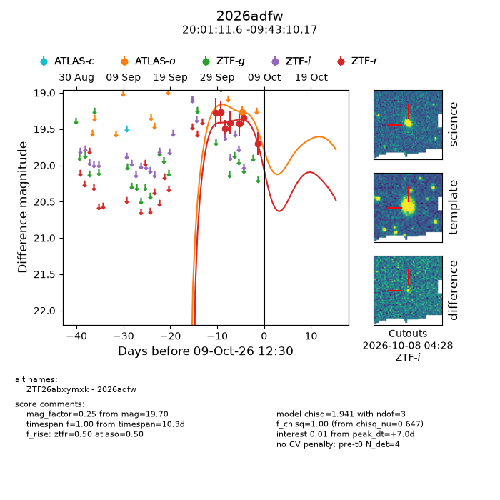
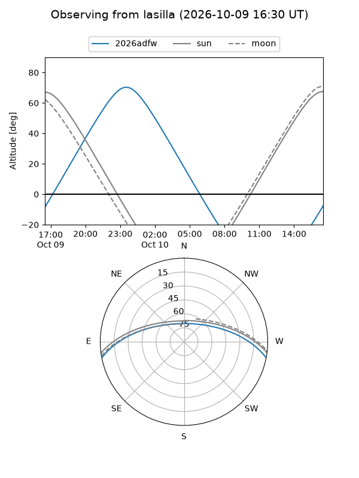
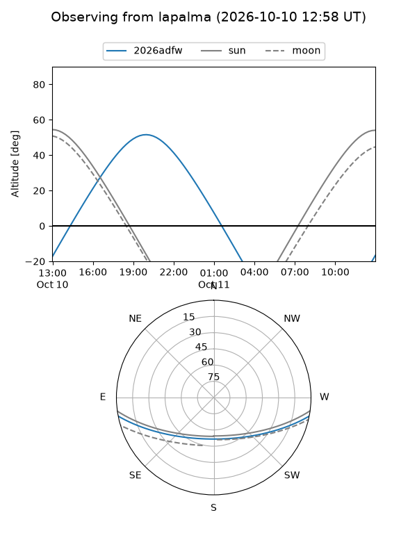
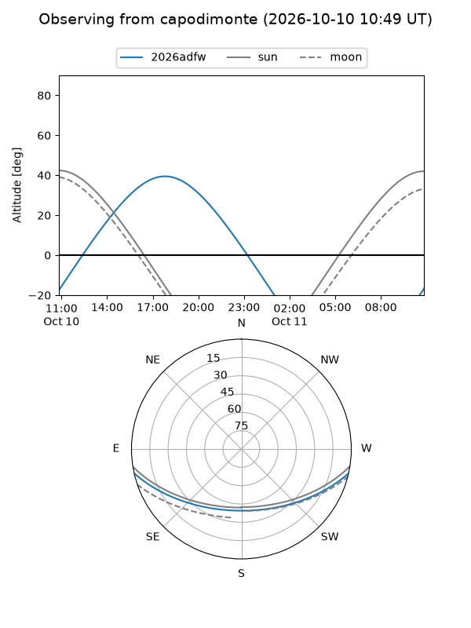
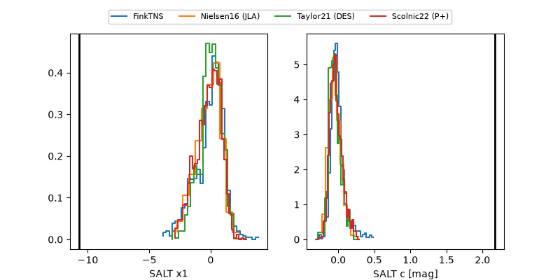

2026adfw
Target 2026adfw at 2026-10-09 12:32
Aliases and brokers:
FINK-ZTF: ztf.fink-portal.org/ZTF26abxymxk
Lasair-ZTF: lasair-ztf.lsst.ac.uk/objects/ZTF26abxymxk
ALeRCE-ZTF: alerce.online/object/ZTF26abxymxk
YSE-PZ: ziggy.ucolick.org/yse/transient_detail/2026adfw
TNS name: wis-tns.org/object/2026adfw
Direct TNS query: direct search
alt names
ZTF26abxymxk (ztf,fink_ztf)
2026adfw (tns,yse)
Coordinates:
equatorial (ra, dec) = 300.2984,-9.71949
equatorial (HMS+DMS) = 20:01:11.62,-09:43:10.17
galactic (l, b) = (31.9839,-19.86914)
Flags:
peak dt: +7.0
Photometry:
last atlaso=19.27, ztfr=19.70
1 atlaso, 7 ztfr detections
Lightcurve

Visibility



Additional plots
